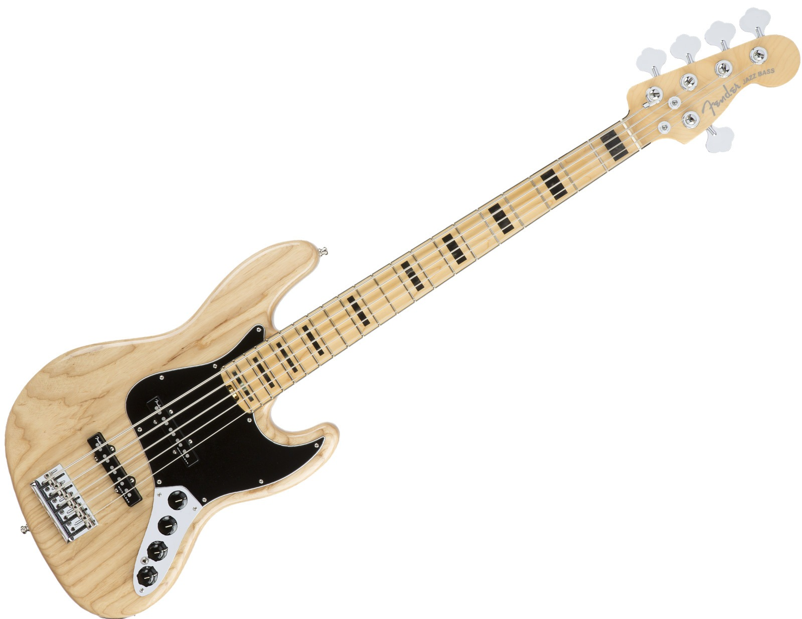

Caracteristcas de Instrumentos
El Geddy Lee Jazz Bass es una réplica exacta del instrumento tonalmente singular que el venerado bajista / vocalista de Rush ha tocado frente a millones de devotos fanáticos en todo el mundo y en muchos álbumes de gran venta. Lee sigue siendo un bajista aclamado y enormemente influyente y, con un paso mezquino y mezquino, su modelo de firma más vendido y de estilo elegante hace que su tono crezca con vida y se erice con la energía, con graves masivos, rango medio gutural y agudos cristalinos.
Marca
Gamma
Cantidad de trastes
Madera
Precio
ibanez
Tope de gama
24
pino
30000pesos